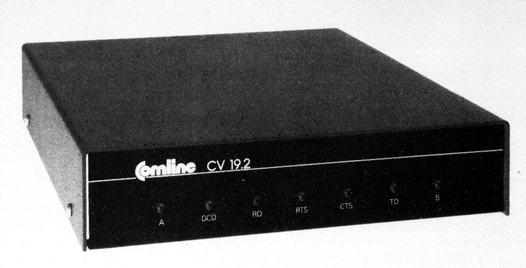

DFÜ-News: Datex-P-Parameter
Wollen Sie Datex-P dazu bewegen, mit einem XON/XOFF-Protokoll zu arbeiten oder mit einer anderen Paketgröße? Dies und vieles mehr wird mit den SET-Befehlen von Datex-P möglich.
Abfrage der Betriebsparameter:
PAR? <CR>
gibt eine Liste der aktuellen Parameter aus
Setzen von Parametern:
Zum Einstellen von Parametern gibt es zwei Formate. Mit einem kann ein einzelner Parameter, mit dem anderen eine ganze Reihe von Parameter geändert werden. Den SET-Befehl können Sie im Terminalprogramm speichern, damit Sie ihn nicht immer per Hand eingeben müssen.
Es bedeuten:
<PN> Parameter-Nummer
<CR> Carriage Return (Return-Taste)
Format 1: SET <PN>:<Wert> <CR>
Format 2: SET <PN>:<Wert>,<PN>:<Wert>,…
…,<PN>:<Wert><CR>
Liste der PAD-Parameter:
Parameter 1
Legt fest, ob ein Wechsel zwischen den Betriebsarten »Datentransfer« und »Befehlseingabe« stattfinden darf oder nicht. Mit dem Parameter 1 läßt sich also die Control-P-Funktion von Datex-P abschalten. Um einem anderen Computer ein Control-P zu übermitteln, muß dann nur noch einmal Control-P eingetippt werden, und nicht zweimal.
| Wert: | 0 | kein Wechsel |
| 1 | Wechel |
Parameter 2
Schaltet das Echo der Zeichen vom PAD zum Benutzer ein oder aus.
| Wert: | 0 | Übertragung ohne Echo |
| 1 | mit Echo |
Parameter 3
Gibt das oder die Aktivierungszeichen an, nach dessen Empfang das PAD die angesammelten Daten als Paket absenden soll.
| Wert: | 0 | kein Aktivierungszeichen. Der Datenblock muß vom Sender aufgefüllt werden |
| 2 | <CR> = Carriage Return; ASCII-Code 13 | |
| 126 | Alle Controlcodes (hex 01-0F) sowie <DEL> (hex 7F) des ASCII-Zeichensatzes 5 |
Parameter 4
Regelt die Zeitspanne, nach deren Ablauf die im PAD angesammelten Daten als Paket weitergeleitet werden.
| Wert: | 0 | keine zeitabhängige Weiterleitung |
| n | Weiterleitung nach nx40 Millisekunden (0<n<256) |
Parameter 5
Art des Handshakes
| Wert: | 0 | PAD sendet kein XON/XOFF |
| 1 | PAD sendet XON/XOFF |
Parameter 6
Gibt an, ob PAD-Meldungen an das DE (Datenendgerät) weitergeleitet werden oder nicht.
| Wert: | 0 | Meldungen werden unterdrückt |
| 1 | Meldungen werden weitergeleitet |
Parameter 7
Funktion des BREAK-Signales (Logisch »0« für mindestens 400 ms). Standard-Wert ist 21.
| Wert: | 0 | keine Auswirkung |
| 21 | Auslösung |
Parameter 8
Bestimmt die Ausgabe an das DE
| Wert: | 0 | normale Ausgabe an das DE |
| 1 | Unterdrücken aller Ausgaben |
Parameter 9
Dieser Parameter gibt die Anzahl der FILL-Character (<NUL> = hex 00) an, die nach einem <CR> gesendet werden sollen. Standard ist 2.
| Wert: | 0 - 255 | Zahl der FILL-Character |
Parameter 10
Mit diesem Parameter kann eine bestimmte Zeilenlänge definiert werden. Bei Erreichen der angegebenen Länge sendet das PAD automatisch ein <CR>.
| Wert: | 0 | keine bestimmte Zeilenlänge |
| 1 - 255 | Anzahl der Zeichen pro Zeile |
Parameter 11
Gibt die aktuelle Übertragungsgeschwindigkeit an. Parameter kann nur gelesen werden.
| Wert | Geschwindigkeit in bit/s |
|---|---|
| 0 | 110 |
| 2 | 300 |
| 3 | 1200 |
| 5 | 75/1200 |
| 11 | 1200/75 (Btx) |
Parameter 12
Einstellung, ob Datenfluß vom PAD(!) mit XON/XOFF geregelt werden kann.
| Wert: | 0 | Datenfluß ist vom PAD nicht steuerbar |
| 1 | Datenfluß ist vom PAD steuerbar |
Parameter 118
Code des RUBOUT-Zeichens, mit dem eingegebene Zeichen wieder gelöscht werden können. Funktioniert allerdings nur dann, wenn Parameter 4 auf 0 gesetzt wurde.
| Wert: | 0 | kein Löschen möglich |
| 1 - 127 | Dezimaler Code des zu verwendenden Zeichens nach dem ASCII-Code 5. Beispielsweise 8 für das übliche <BS>. | |
| (Z) | Z ist ein sichtbares Zeichen (hex 20-7E). |
Funktion: 45945232zl bedeutet 45945231
Parameter 119
Wirkt wie Parameter 118, nur auf ganze Zeilen. Am Zeilenende erscheinen nach dem Löschbefehl drei Asterisken (***).
Parameter 120
Mit diesem Parameter kann ein Zeichen zur Wiedergabe der zuletzt eingegebenen Zeile definiert werden. Nach Eintippen des Zeichens erscheint die zuletzt eingegebene Zeile nochmal am Bildschirm. Es sind alle Werte erlaubt, die auch bei Parameter 118 und 119 zugelassen sind. Doppelbelegungen sind selbstverständlich zu vermeiden.
Parameter 121
Alternatives Aktivierungszeichen 1. Werte wie bei Parameter 118. Siehe auch Parameter 3
Parameter 122
Alternatives Aktivierungszeichen 2. Werte wie bei Parameter 118/119
Parameter 123
Parity-Prüfung ein- oder ausschalten.
| Wert: | 0 | keine Parity-Prüfung |
| 1 | Parity-Prüfung mit Ergänzung der ankommenden Zeichen. Die Parity (odd oder even) wird aus dem Dienstanforderungs-Signal (.) erkannt. |
Parameter 125
Einstellung der Verzögerungszeit für Ausgaben vom PAD. Damit läßt sich eine Halbduplex-Übertragung simulieren, wenn Ein- und Ausgaben sich nicht kreuzen dürfen.
| Wert: | 0 | keine Verzögerung |
| 1 - 255 | Verzögerung in Sekunden |
Parameter 126
Dieser Parameter gibt an, ob und wie ein Linefeed (LF=hex 0A) nach einem Carriage Return (CR = hex 0D) eingefügt werden soll.
| Wert: | 0 | es wird kein LF eingefügt |
| 1 | LF wird nach CR vom Postrechner eingefügt | |
| 4 | LF wird nach CR vom Datengerät eingefügt | |
| 5 | Entspricht 1 + 5 |
Modem kontra Akustikkoppler
Die meisten Hacker bevorzugen zur Datenübertragung einen Akustikkoppler und kein Modem. Denn ein Akustikkoppler hat gegenüber dem Modem einige Vorteile: keine laufenden Kosten, es ist keine Anmeldung bei der Post nötig und vor allem muß der angeschlossene Computer nicht unbedingt eine Postzulassung, sprich FTZ-Nummer besitzen. Kommt es aber auf eine schnelle und sichere Datenübertragung an, ist man mit einem Modem wesentlich besser beraten. Die Datenübertragung funktioniert so gut wie störungsfrei, denn es ist keine akustische Kopplung vorhanden. Vor allem sind auch höhere Übertragungsgeschwindigkeiten als 300 oder 1200/75 bit/s, zu realisieren.
Leider ist es so, daß in der Bundesrepublik nur die von der Post vertriebenen Modems zugelassen sind. Jedoch hat auch die Deutsche Bundespost inzwischen ein breites Angebot an Modems zu bieten. Angefangen beim D 300 S mit 300 bit/s bis hin zum D 4800 S, das mit 4800 bit/s die Daten schon recht zügig über den Bildschirm flitzen läßt.
Für Hacker am interessantesten ist das D 1200 S mit 1200 bit/s, da es, wie ein Akustikkoppler mit 300 bit/s den Zugang über das Telefonnetz ins Datex-P-Netz, aber in beiden Übertragungsrichtungen die vierfache Geschwindigkeit. Mit den schnelleren Modems ist kein Zugang mehr über das Telefonnetz in das Datex-P-Netz möglich, hier benötigt man einen Datex-P-Hauptanschluß.
Das bedeutet allerdings einen wesentlich höheren finanziellen wie technischen Aufwand.
Bleibt also das D 1200 S. Dieses Modem muß, ähnlich wie das Telefon, bei der Post beantragt werden. Dazu gibt es einen »Antrag für Einrichtung zur Übertragung von Daten an Fernsprechanschlüssen und für Datenverbundleitungen« mit der Nummer 932 008 000.
Die monatlichen Kosten für das Modem betragen 120 Mark. Dazu kommen, wie gewohnt, die Telefongebühren und eine einmalige Anschlußgebühr von 65 Mark.
Neben diesem Modem, das mit 120 Mark pro Monat doch schon erheblich zu Buche schlägt, bietet die Post unter der Bezeichnung MDB 1200 verschiedene Einschubmodems an, die in dafür vorbereitete und zugelassene Computer eingesteckt werden können. Für alle die, die auf diese Möglichkeit nicht zugreifen können, gibt es bei der Firma ELSA die »Modembox«, in die das MDB 1200-03 eingebaut werden kann. An den Computer wird die Modembox über eine normale V.24-Schnittstelle angeschlossen. Übertragungsgeschwindigkeiten von300,1200/75, 75/1200 und 1200 bit/s lassen sich damit realisieren.
Die monatliche Gebühr für das MDB1200-03 beträgt nur 20 Mark. Die Modembox kostet allerdings 1575 Mark inklusive MwSt.
(BHP/hm)Info: Elsa, Monheimsallee 53, 5100 Achen, Tel. 02 41/2 99 92
Simultanes Sprach- und Datenmodem
Comline bietet ein Modem für hausinterne, gleichzeitge Übertragung von Daten und Sprache an. Die Übertragung soll auf einer normalen 2-Draht-Leitung, wie der Telefonleitung, erfolgen. Die Übertragungsgeschwindigkeit soll von 600 bis 19200 bit/s eingestellt werden können. Für Übertragungen werden zwei Modems benötigt. Bei großen Entfernungen soll ein zusätzlicher Filter in die Leitung geschaltet werden. Die Datenschnittstelle zum Terminal, Drucker oder CPU ist V.24/V.28 (RS232) synchron oder asynchron. Das Modem heißt COM-VOX CV 19.2 F und kostet 990 Mark netto.
Das Schwestermodem CV 4.8 hat eine nach obenhin auf 4800 bit/s begrenzte Übertragungsrate. Weitere Informationen gibt es bei: Comline, Klingsorstr. 2, 8000 München 81, Tel. 0 89/ 912081.
(hm)